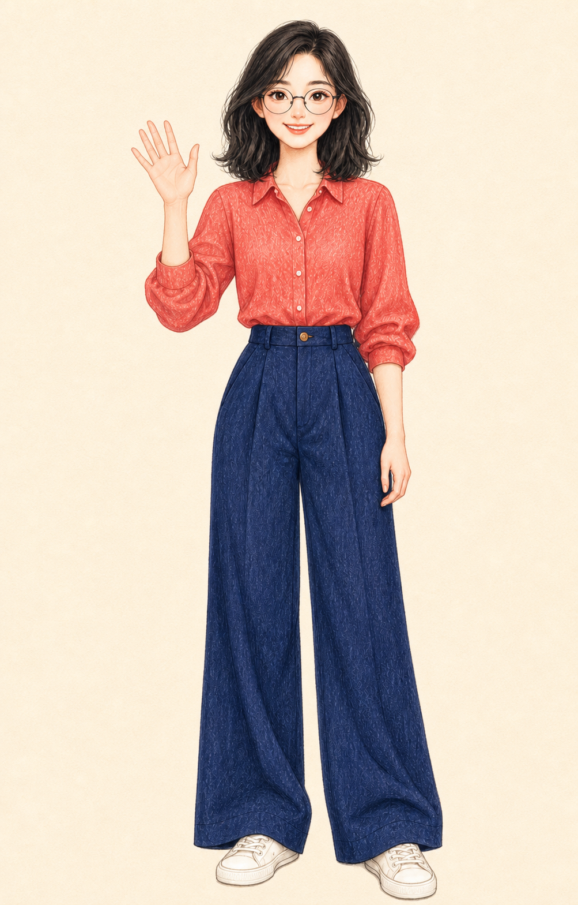
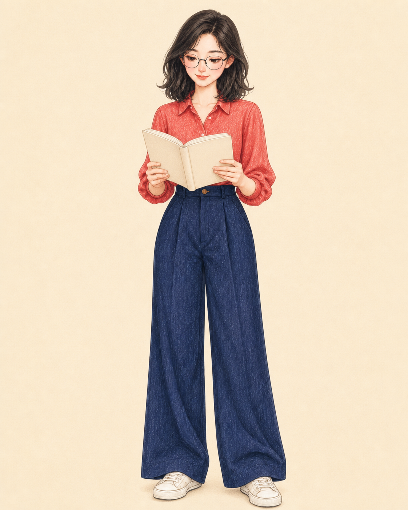
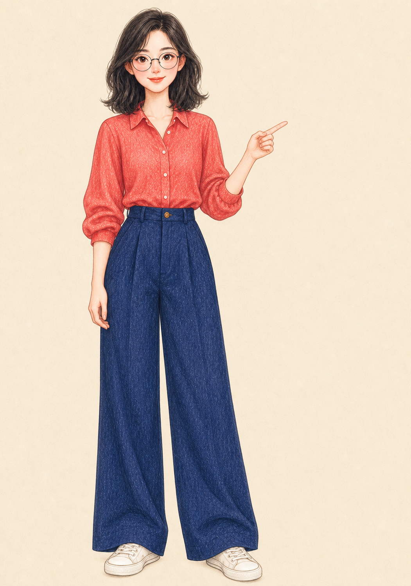
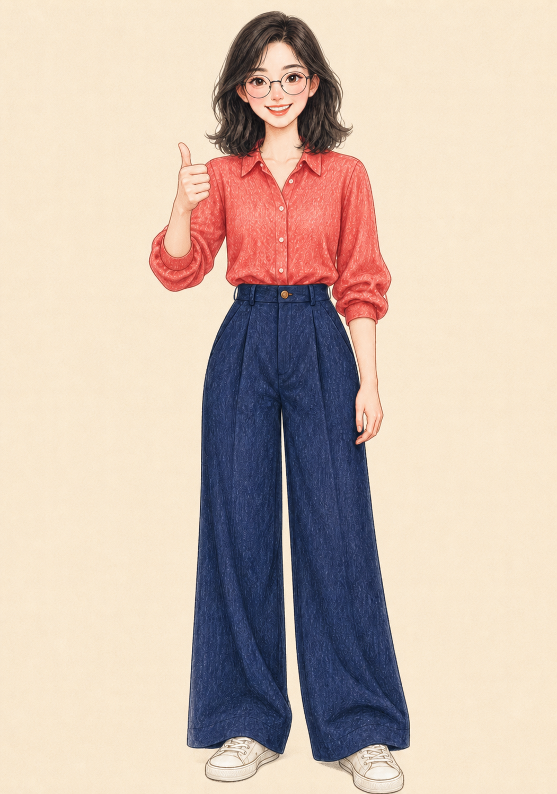

稳定不是“不许变化”
六项资产都继承 v1/r1 的人物锁；表情、动作、道具和构图可以变化，脸、发型、眼镜、服装与色板不能偷偷变化。
01 / 核心判断
它把一次性生图的价值从“这一张是否好看”，迁移到“下一张能否更快、更稳、更可控”。人物不可变特征、允许变化、版本、文件规格和失败原因都被保存，新增一张资产不必从零沟通。
02 / 完整生产演示
真实图片作为证据 · 六阶段流程可操作 · 每项资产可追踪
为一名知识博主准备课程发布所需的头像、欢迎、讲解、思考与庆祝素材；同一人物跨社交账号、课程页、PPT 和社群持续复用。
把“做一套个人 IP”转换成具体渠道、资产形式和验收标准，避免生成完成后才发现不能使用。
资产尚未进入生产。
点击上方资产卡，可追踪任一文件的来源、变化、规格与 QA。
身份锁冻结；透明通道真实存在。
1060 × 1484 · ALPHA TRUE
只改变表情与手势；人物锁继续继承 v1。
1003 × 1568 · ALPHA FALSE
只增加思考表情与必要道具；服装和色板不变。
1122 × 1402 · ALPHA FALSE
为 PPT 和课程讲解增加指向动作；身份锁保持 v1。
1051 × 1496 · ALPHA FALSE
为社群反馈增加庆祝表情与单手点赞；无需重做旧资产。
1051 × 1496 · ALPHA FALSE只改变构图为方形半身头像；人物脸、头发、眼镜与上衣不变。
1254 × 1254 · ALPHA FALSE六项资产都继承 v1/r1 的人物锁；表情、动作、道具和构图可以变化，脸、发型、眼镜、服装与色板不能偷偷变化。
版本、anchor、唯一变量、像素尺寸、alpha、SHA-256 和 QA 结论均进入 manifest，失败原因也保留。
新增讲解、庆祝和头像时只生产缺少的文件；历史资产和人物版本保持可用，这就是可持续扩展。
初始变体把棋盘格画进 RGB 像素，四角 alpha 均为 255。流程拒绝“看起来透明”的假贴纸，最终改为明确带底色的全身资产。
首次通过率、人物一致性通过率、单项追加成本和渠道覆盖率，比“总共生成了多少张”更有意义。
林简是虚构人物；本轮证明真实生产与 QA 链路，真人肖像还原仍需已授权照片另测。
03 / 真实风格矩阵
CHARACTER v1 不变 · STYLE sN 独立 · RELEASE rN 继续追加
IP-04 擅长全身与换装；场景卡不应勉强生成，而应路由到 IP-05。
avatar · v1/s1/r6
full_body · v1/s1/r1
能力规范拒绝，而不是让模型碰运气。
强项：头像、半身表情；全身被能力路由阻塞。
强项：品牌头像与封面；全身需要条件验收。
强项：高饱和表情和动作贴纸；换装被能力路由阻塞。
强项：全身、换装和头像裁切；场景卡被阻塞。
强项：贴纸与微场景；换装不是其能力重点。
强项：漫画头像、半身贴纸和营销封面，三项均通过。
04 / 机制实验台
原创参数化 SVG · 不使用真实照片与上游参考图
这是流程与状态机制演示：验证“状态如何被管理”，不验证“模型能否稳定画出同一个真人”。真实项目仍需上传已授权照片、调用图像生成工具并进行视觉验收。
05 / 能力地图
越往下越接近可长期复用的产品资产。
先确认肖像和风格素材权利，再允许生成。原始照片不进入默认交付包。
PROCESS CONTROL风格不仅决定外观，还明确支持、条件支持和拒绝的资产形式。
MACHINE-READABLE SPEC用户确认原型后冻结身份锁；后续资产继承锚点，不重新设计人物。
IDENTITY STATE每轮只改变允许字段，失败资产单独重做，避免整包重新生成。
CONTROLLED VARIATION独立 PNG、实际尺寸、透明通道、哈希、QA 和用户验收形成记录。
DELIVERY CONTRACT06 / 底层原理
授权、照片职责、用途与资产范围先成为 brief。
身份锁、风格规则、资产规格和唯一变量按优先级编译。
草案 dN 经用户确认后冻结为 vN 和 approved anchor。
表情、姿势和道具形成新的 rN，不触碰身份锁。
机器检查文件事实，人工检查人物和风格事实。
07 / 真实边界
仓库不包含训练、LoRA、embedding 或专用人物一致性算法，最终画质依赖外部图像工具。
六组内置风格图片均为 pending_clearance，按上游规则不能送入生成模型。
校验器检查格式、尺寸、透明像素和哈希，不能判断像不像、是否多手指或风格漂移。
研究版本根目录没有 LICENSE；本项目只引用和独立演示，不复制上游代码与素材。
08 / 使用场景
采用它的判断标准不是行业，而是资产是否会持续追加、跨渠道复用和多人验收。
头像、课程封面、讲解动作、社媒回复表情长期共用同一人物。
高频追加 · 高一致性需求把个人形象扩展到 PPT、课件、海报和方法论图解，减少每次重新沟通。
多渠道 · 可审稿用角色卡、版本和 manifest 管理客户确认、返工与正式交付。
多人协作 · 可追溯持续生产欢迎、答疑、提醒、庆祝等轻量表情与动作资产。
长尾变体 · 边际成本敏感在人物身份不变的前提下管理活动服装、节日动作和渠道尺寸。
品牌规范 · 版本治理只做一张头像、追求完全写实数字人、需要连续动画或尚未解决素材权利时，直接生成或采用专门管线更合适。
一次性 / 高写实 / 动画管线09 / 可扩展路线
10 / 对我们的意义
Project 001 交付可运行作品；Project 002 研究如何把 Skills 组织成产品平台；Project 003 让我们看到，生成式产品还需要保存角色锚点、版本、失败记录和验收证据。它也给后续研究提供了可量化基线：单资产成本、首次通过率、一致性得分与返工率。
真正可积累的不是某一次生成，而是下一次还能稳定继续的项目状态。
11 / 来源